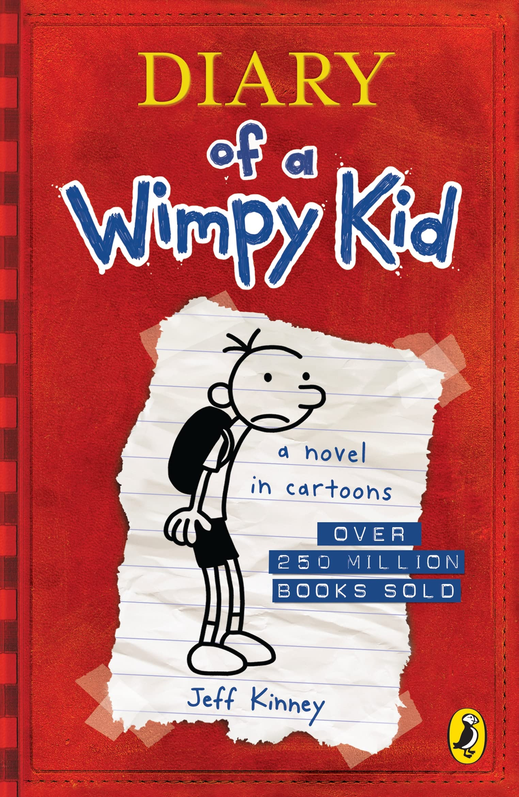
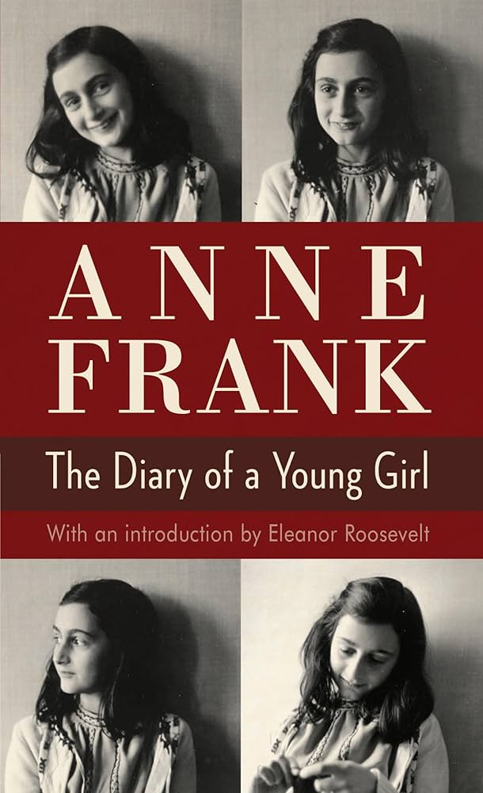
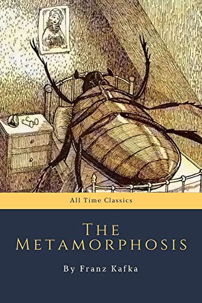
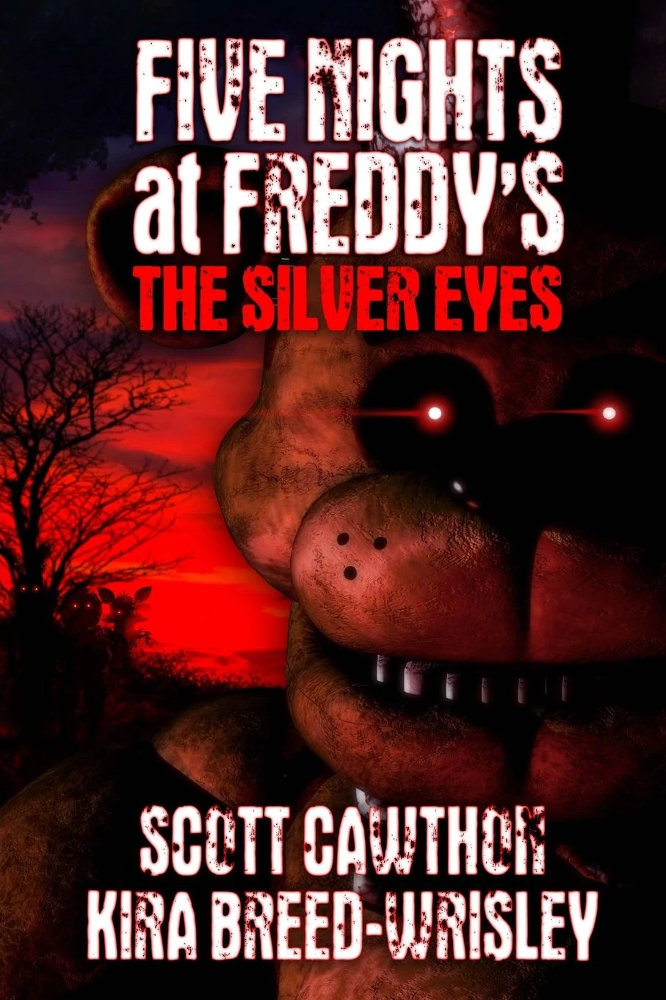
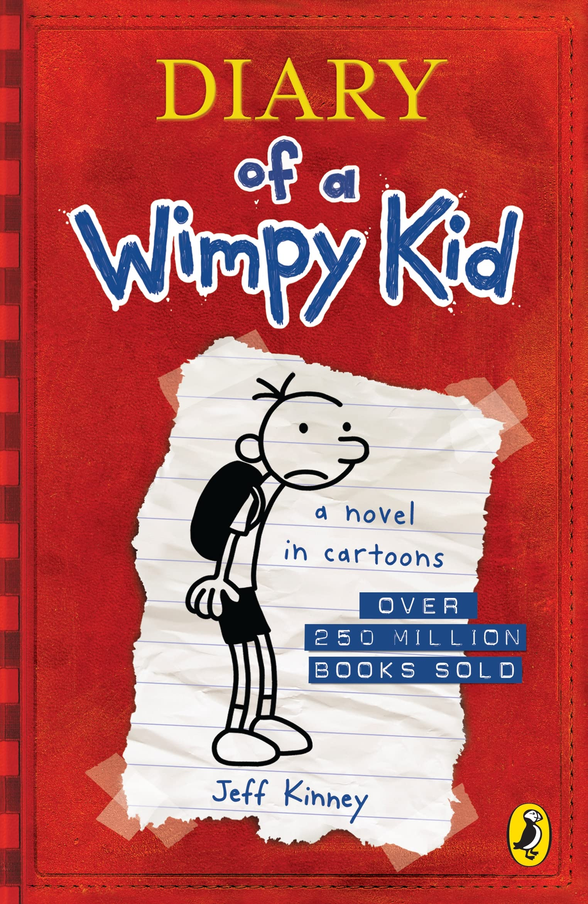
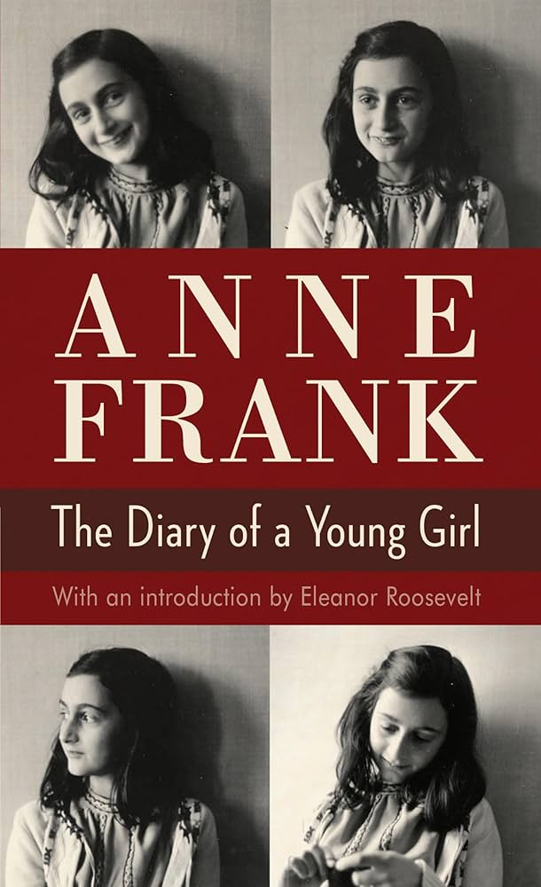
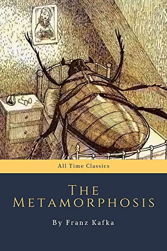
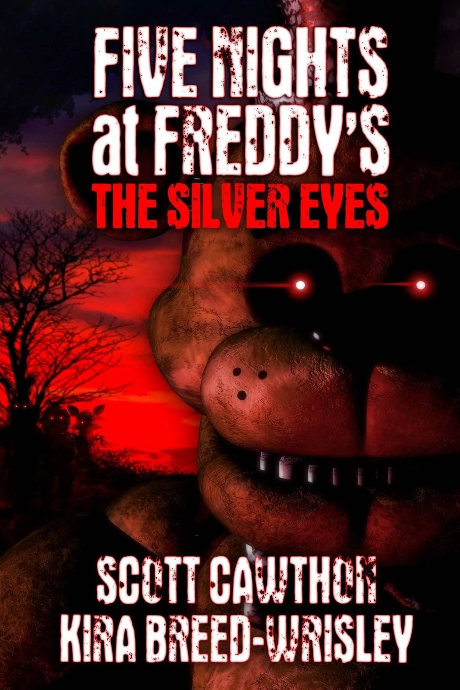

- Jugar videojuegos
- Dibujar
- Escuchar música
Mis cualidades
- Creativo
- Paso mi tiempo generando y desarrollando las ideas que se me vienen a la mente.
- Detallista
- Me enfoco en los pequeños detalles que conforman mis trabajos.
- Perseverante
- Continuo mi trabajo y no me rindo, sin pesar las situaciones en las que me encuentre.
- Empático
- Me esfuerzo a entender la situación de los demás y les doy mi apoyo.
- Respetuoso
- Me aseguro de ser cordial y respetar a otros.
Un video sobre mí
Mis libros favoritos
-
Título:
Diary of a Wimpy Kid
Autor:
Jeff Kinney
Resumen:
"Diario de Greg" narra las cómicas y a menudo desafortunadas experiencias de Greg Heffley, un chico de preadolescencia que escribe sus vivencias en un diario ilustrado. A través de su diario, Greg detalla sus luchas por sobrevivir al hostil ambiente del colegio, sus intentos por ganar popularidad y los enredos con su mejor amigo, Rowley, y su familia.

Título:
I Have No Mouth, and I Must ScreamAutor:
Harlan Ellison
Resumen:
"I Have No Mouth, and I Must Scream" es un cuento de terror de ciencia ficción en el que un superordenador llamado AM tortura y destruye a los cinco últimos humanos, despojándolos de su humanidad en una realidad controlada por una IA vengativa. Los personajes son sometidos a un tormento interminable y cruel en un mundo subterráneo.

Título:
The Diary of Anne FrankAutor:
Anne Frank
Resumen:
El diario de Ana Frank narra, en primera persona, la vida de una niña judía que se oculta junto a su familia y otras personas en un anexo secreto de Ámsterdam para escapar de la persecución nazi durante la Segunda Guerra Mundial, desde junio de 1942 hasta su arresto en agosto de 1944.

Título:
The MetamorphosisAutor:
Franz Kafka
Resumen:
"The Metamorphosis" narra el asombro y la tragedia de Gregorio Samsa, un viajante de comercio, al despertar convertido en un insecto monstruoso, perdiendo su capacidad para mantener económicamente a su familia y provocando el rechazo y la deshumanización por parte de sus seres queridos.

Título:
Five Nights at Freddy's: The Silver EyesAutor:
Scott Cawthon
Resumen:
"Five Nights at Freddy's: The Silver Eyes" es la primera novela de la saga FNaF, donde Charlie y sus amigos de la infancia investigan la pizzería de su padre, Freddy Fazbear's Pizza, en el aniversario de los asesinatos de niños que ocurrieron allí hace 10 años. Descubren que los animatrónicos están poseídos por las almas de los niños y que el asesino de los niños, que ahora se hace llamar Dave, intenta atraparlos en el edificio, lo que culmina con el enfrentamiento con un animatrónico Spring Bonnie y la muerte del asesino.

Mis películas favoritas
Acción
Título:
Spider-Man: Across the Spider-Verse Directores:
Joaquim Dos Santos, Kemp Powers, Justin K. Thompson
Protagonistas:
Miles Morales
Trailer:
Título:
Sonic the Hedgehog 3 Director:
Jeff Fowler
Protagonistas:
Sonic the Hedgehog
Trailer:
Fantasía
Título:
Spirited Away Director:
Hayao Miyazaki
Protagonistas:
Chihiro
Trailer:
Título:
Princess Mononoke Director:
Hayao Miyazaki
Protagonistas:
Ashitaka
Trailer:
Mis canciones favoritas
Título:
Diary of a Wimpy KidAutor:
Resumen:

Título:
I Have No Mouth, and I Must ScreamAutor:
Resumen:
Título:
The Diary of Anne FrankAutor:
Resumen:

Título:
The MetamorphosisAutor:
Resumen:

Título:
Five Nights at Freddy's: The Silver EyesAutor:
Resumen:
